🐇 仙境之战？
Wonderland's War · 设计：Isaac Shalev & Andrew Smith · Druid City Games / Skybound Games 出版 · 2–5 人 · 官方英文规则书全文翻译（24 页 · AI 辅助机翻）
本页收录《仙境之战？》（Wonderland's War, 2021）的原版官方规则书全部 24 页（底本：Druid City Games 官方规则书（BGG files 托管），SKB-WW-rulebook-1.20.pdf），逐页随图排列，点击任意图片即可放大查看；每页下方默认折叠了该页的 AI 辅助中文机翻对照，需要时可展开。规则内容归 Druid City Games / Skybound Games 及版权方所有，收录仅供个人学习查阅。
整理说明：机翻对照按本站术语口径对齐（牌库/手牌/回合/轮/板块/指示物等），PDF 图文混排页的语序可能与原书视觉顺序略有出入；规则细节请一律以页面上方原书页面为准。
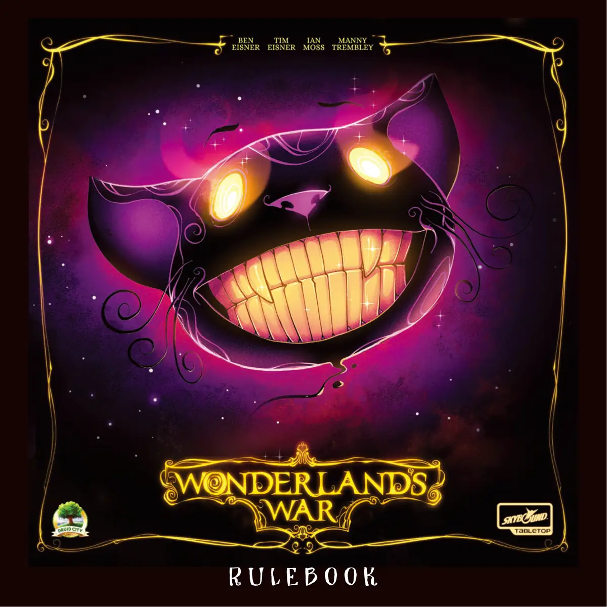
📝 第 1 页 AI 机翻对照（点击展开）
规则书
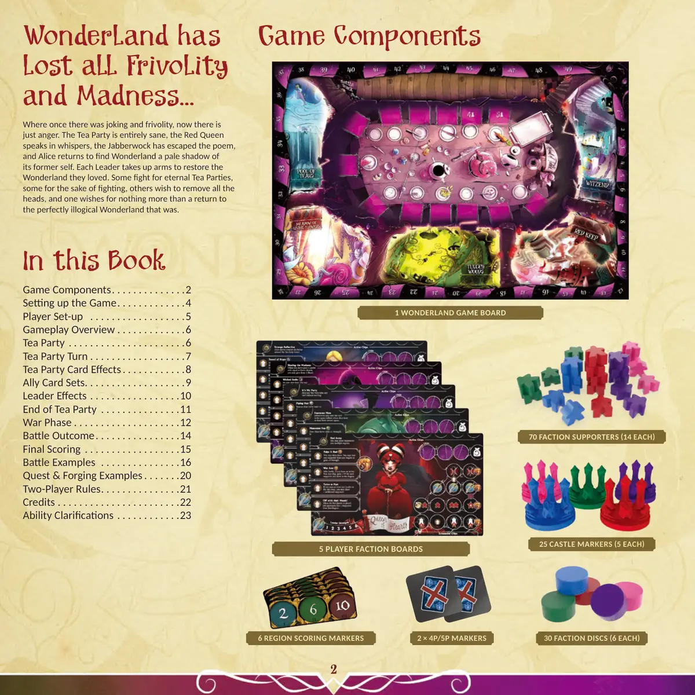
📝 第 2 页 AI 机翻对照（点击展开）
游戏组件
仙境已经失去了所有的轻浮与疯狂...
曾经有玩笑和轻浮的地方，现在只剩下愤怒。茶会完全理智，红皇后低声细语，炸脖龙已经逃离了诗歌，而爱丽丝回来发现仙境只是其昔日辉煌的苍白影子。每位领袖都拿起武器，去恢复他们所爱的仙境。有些人为永恒的茶会而战，有些人为战斗本身而战，其他人希望砍掉所有的头，而一个人只渴望回到那个完美不合理的仙境。
在本手册中
游戏组件 . . . . . . . . . . . . .2
游戏设置 . . . . . . . . . . . . .4
玩家设置 . . . . . . . . . . . . . . . . .5
游戏概览 . . . . . . . . . . . . .6
茶会 . . . . . . . . . . . . . . . . . . . . . .6
茶会回合 . . . . . . . . . . . . . . . . .7
茶会卡牌效果 . . . . . . . . . . .8
盟友卡组 . . . . . . . . . . . . . . . . . .9
领袖效果 . . . . . . . . . . . . . . . .10
茶会结束 . . . . . . . . . . . . . . .11
战争阶段 . . . . . . . . . . . . . . . . . . .12
战斗结果 . . . . . . . . . . . . . . .14
最终计分 . . . . . . . . . . . . . . . . . .15
战斗示例 . . . . . . . . . . . . . . .16
任务与锻造示例 . . . . . . . . . .20
双人规则 . . . . . . . . . . . . . . .21
制作人员 . . . . . . . . . . . . . . . . .22
能力说明 . . . . . . . . . . . . .23
1 仙境游戏版图
70 派系支持者（每个派系14个）
25 城堡标记（每个派系5个）
30 派系圆盘（每个派系6个）
6 区域计分标记
2 × 4人/5人标记
5 玩家派系版
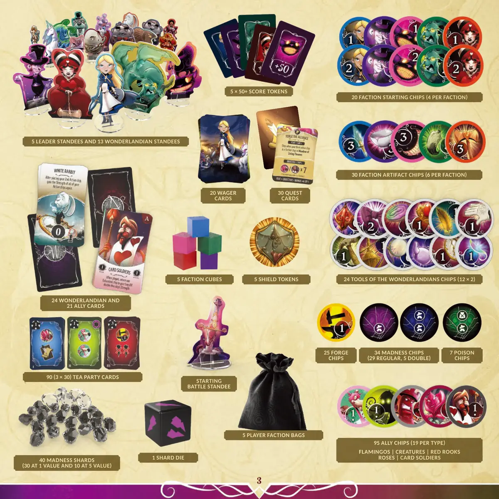
📝 第 3 页 AI 机翻对照（点击展开）
5 个领袖立牌和 13 个仙境人物立牌
5 个派系立方体
5 个盾牌指示物
5 × 50+ 分数指示物
24 张仙境人物卡和
21 张盟友卡
90 张（3 × 30）茶会卡
20 张下注卡
30 张任务卡
初始
战斗立牌
20 个派系起始筹码（每个派系4个）
30 个派系神器筹码（每个派系6个）
24 个仙境人物工具筹码（12 × 2）
25 个锻造
筹码
34 个疯狂筹码
（29个普通，5个双倍）
7 个毒药
筹码
95 个盟友筹码（每种类型19个）
火烈鸟 | 生物 | 红车
玫瑰 | 卡牌士兵
5 个玩家派系袋
1 个碎片骰子
40 个疯狂碎片
（30个价值1和10个价值5）
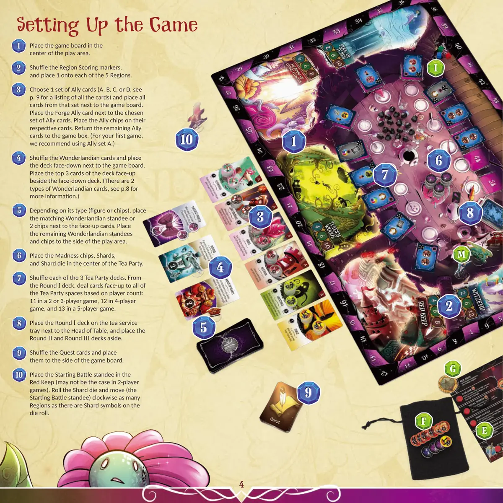
📝 第 4 页 AI 机翻对照（点击展开）
e
f
g
i
m
游戏设置
1.
将游戏版图放置在游戏区域的中央。
2. 洗混区域记分标记，并在5个区域上各放置1个。
- 选择一套盟友卡牌（A、B、C或D，所有卡牌列表见第9页），并将该套的所有卡牌放置在游戏版图旁边。将锻造盟友卡牌放置在所选的盟友卡套旁边。将盟友筹码放置在它们各自的卡牌上。将剩余的盟友卡牌放回游戏盒中。（对于你的第一局游戏，我们建议使用盟友套A。）
4. 洗混仙境卡牌，并将牌库面朝下放置在游戏版图旁边。将牌库顶部的3张卡牌面朝上放置在面朝下的牌库旁边。（有2种类型的仙境卡牌，更多信息见第8页。）
- 根据其类型（人形或筹码），将相应的仙境立牌或2个筹码放置在面朝上的卡牌旁边。将剩余的仙境立牌和筹码放置在游戏区域的旁边。
6. 将疯狂筹码、碎片和碎片骰子放置在茶会中央。
7.
洗混3个茶会牌库。从第一轮牌库中，根据玩家数量向所有茶会空间发牌面朝上：2人或3人游戏发11张，4人游戏发12张，5人游戏发13张。
8. 将第一轮牌库放置在桌首旁边的茶具托盘上，并将第二轮和第三轮牌库放在一旁。
9. 洗混任务卡牌，并将它们放置在游戏版图旁边。
10. 将起始战斗立牌放置在红堡（在2人游戏中可能不是这种情况）。掷碎片骰子，并将（起始战斗立牌）顺时针移动骰子结果上的碎片符号数量的区域。
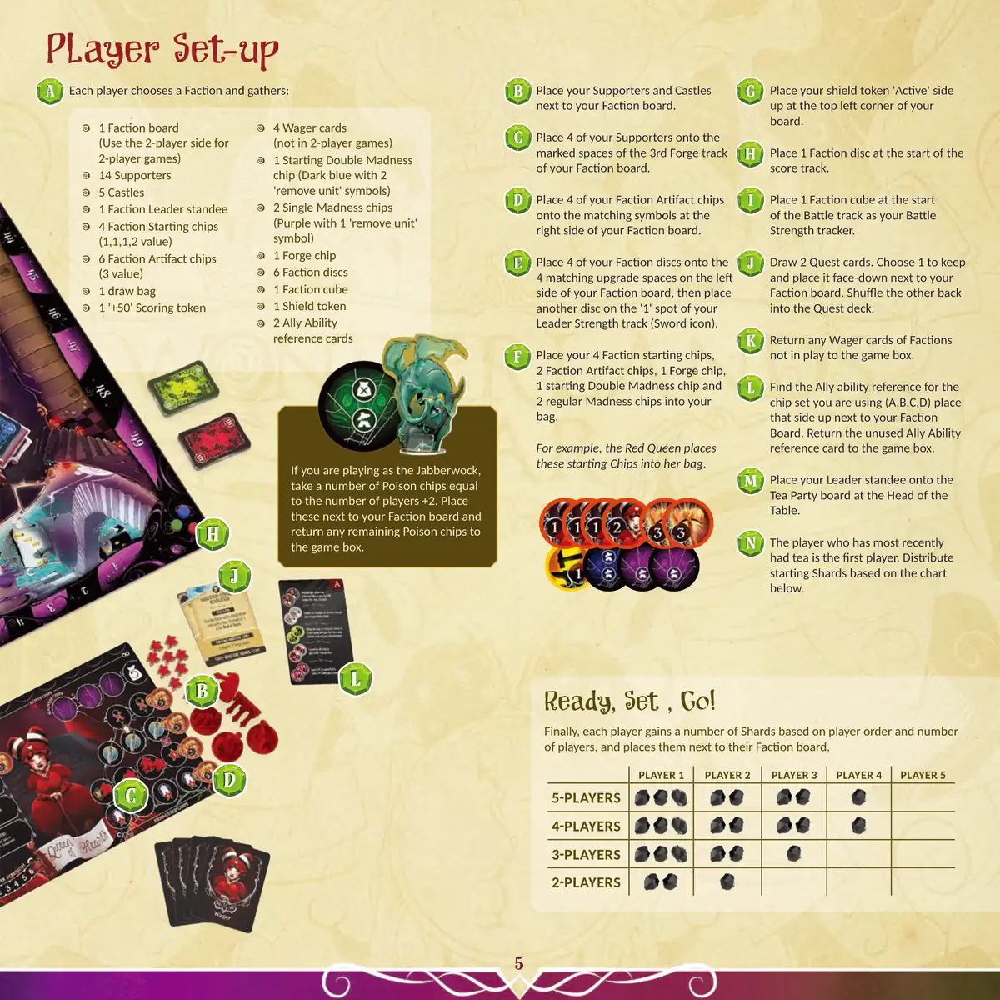
📝 第 5 页 AI 机翻对照（点击展开）
t 1 派系版图
（2人游戏时使用2人游戏面）
t 14 支持者
t 5 城堡
t 1 派系领导者立牌
t 4 派系起始筹码
（价值1,1,1,2）
t 6 派系神器筹码
（价值3）
t 1 摸牌袋
t 1 '+50' 计分指示物
t 4 竞标卡牌
（2人游戏中不使用）
t 1 起始疯狂双倍筹码
（深蓝色，带有2个"移除单位"符号）
t 2 单张疯狂筹码
（紫色，带有1个"移除单位"符号）
t 1 锻造筹码
t 6 派系圆盘
t 1 派系立方体
t 1 盾牌指示物
t 2 盟友能力参考卡
玩家设置
A. 每位玩家选择一个派系并收集：
B. 将你的支持者和城堡放置在你的派系版图旁边。
C. 将4个你的支持者放置在你的派系版图上第三个锻造轨道的标记格上。
D. 将4个你的派系神器筹码放置在你的派系版图右侧的对应符号上。
E. 将4个你的派系圆盘放置在你的派系版图左侧的4个对应升级格上，然后在你的领导者力量轨道（剑图标）的'1'位置上再放置一个圆盘。
F. 将你的4个派系起始筹码、2个派系神器筹码、1个锻造筹码、1个起始疯狂双倍筹码和2个普通疯狂筹码放入你的袋子中。
例如，红皇后将这些起始筹码放入她的袋子中。
G. 将你的盾牌指示物"激活"面朝上放置在你的版图左上角。
H. 在分数轨道起点放置1个派系圆盘。
I. 在战斗轨道起点放置1个派系立方体作为你的战斗强度指示物。
J. 抽2张任务卡。选择1张保留，面朝下放置在你的派系版图旁边。将另一张洗回任务牌库。
K. 将未参与游戏的派系的竞标卡牌放回游戏盒。
L. 找到你正在使用的筹码集的盟友能力参考（A,B,C,D），将该面朝上放置在你的派系版图旁边。将未使用的盟友能力参考卡放回游戏盒。
M. 将你的领导者立牌放置在茶会版图的桌首位置。
N. 最近喝过茶的玩家是起始玩家。根据下表分发起始碎片。
准备，开始，出发！
最后，每位玩家根据玩家顺序和玩家数量获得一定数量的碎片，并将其放置在他们的派系版图旁边。
玩家1
玩家2
玩家3
玩家4
玩家5
5人游戏
4人游戏
3人游戏
2人游戏
b
c
d
H
j
l
b
a
i
j
k
L
M
n
c
d
e
f
g
h
如果你正在扮演 jabberwock（炸脖龙），获得数量等于玩家数+2的毒药筹码。将这些放置在你的派系版图旁边，并将剩余的毒药筹码放回游戏盒。
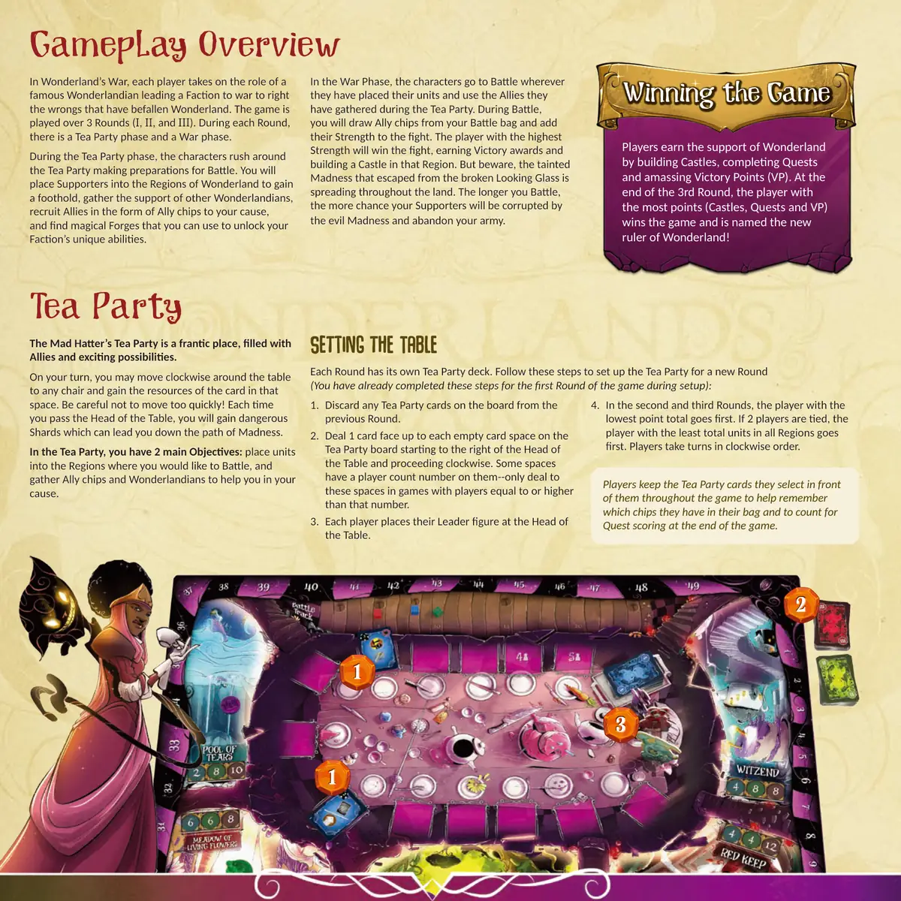
📝 第 6 页 AI 机翻对照（点击展开）
游戏概览
在《仙境战争》(Wonderland's War)中，每位玩家将扮演一位著名的仙境居民，领导一个派系参战，以纠正仙境所遭受的不公。游戏共进行3轮(I、II和III)。每轮包括一个茶会阶段和一个战争阶段。
在茶会阶段，角色们匆忙穿梭于茶会之间，为战斗做准备。你将支持者放入仙境的各个区域以立足，获得其他仙境居民的支持，招募盟友(以盟友筹码的形式)加入你的事业，并找到可以用来解锁你派系独特能力的魔法锻造厂。
在战争阶段，角色们会前往他们部署了单位的任何地方进行战斗，并使用在茶会期间收集的盟友。战斗中，你将从你的战斗袋中抽取盟友筹码，并将他们的力量加入战斗。力量最高的玩家将赢得战斗，获得胜利奖励并在该区域建造一座城堡。但要小心，从破碎的镜子中逃出的污秽疯狂正在蔓延整个大地。战斗时间越长，你的支持者就越有可能被邪恶的疯狂腐蚀并抛弃你的军队。
茶会
疯帽子的茶会是一个疯狂的地方，充满了盟友和令人兴奋的可能性。
在你的回合，你可以顺时针移动到桌边的任何椅子，并获得该位置卡牌的资源。小心不要移动得太快！每次你经过桌首时，你将获得危险的碎片，这些碎片可能会让你走上疯狂的道路。
在茶会中，你有2个主要目标：将单位部署到你想要战斗的区域，并收集盟友筹码和仙境居民来帮助你。
布置茶桌
每轮都有自己的茶会牌库。按照以下步骤为新的一轮设置茶会(在游戏设置阶段，你已经为第一轮完成了这些步骤)：
1. 弃置版图上来自上一轮的所有茶会卡牌。
- 从桌首右侧开始，顺时针方向，为茶会版图上的每个空卡牌位翻开1张卡牌。某些位置上有玩家数量标记——仅在玩家数量等于或高于该数字的游戏中向这些位置发牌。
3. 每位玩家将他们的领袖棋子放在桌首位置。
4. 在第二和第三轮，总分最低的玩家先手。如果有两位玩家平分，则在所有区域中单位总数最少的玩家先手。玩家按顺时针顺序轮流行动。
玩家在整个游戏过程中将他们选择的茶会卡牌保留在自己面前，以帮助他们记住自己袋中有哪些筹码，并用于计分。
游戏结束时的任务计分
获胜
玩家通过建造城堡、完成任务和积累胜利点数(VP)来获得仙境的支持。在第3轮结束时，拥有最多分数(城堡、任务和VP)的玩家赢得游戏，并被命名为仙境的新统治者！
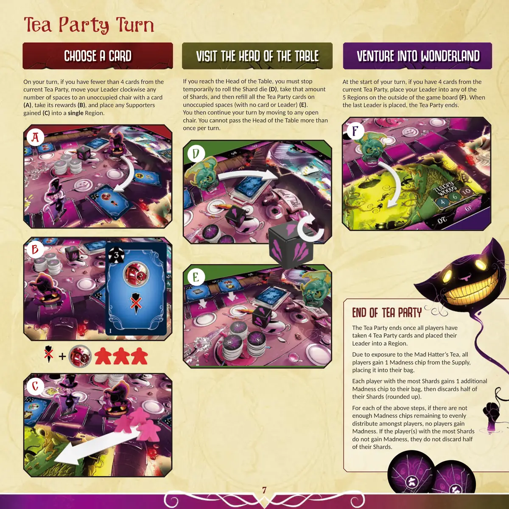
📝 第 7 页 AI 机翻对照（点击展开）
茶会回合
在你的回合，如果你拥有当前茶会的少于4张卡牌，将你的领导者沿顺时针方向移动任意数量的格数到一个有卡牌的空椅子(A)，获取其奖励(B)，并将获得的任何支持者(C)放入一个区域。
如果你到达了桌首，你必须停下来暂时掷出碎片骰子(D)，获得相应数量的碎片，然后重新填充所有位于空格（没有卡牌或领导者）上的茶会卡牌(E)。
然后你通过移动到任何空椅子来继续你的回合。你每个回合不能超过一次经过桌首。
在你的回合开始时，如果你拥有当前茶会的4张卡牌，将你的领导者放入游戏板外部的5个区域中的任意一个(F)。当最后一个领导者被放置时，茶会结束。
领导者效果
A
E
D
F
B
C
选择一张卡牌
拜访桌首
探索仙境
茶会结束
一旦所有玩家都获得了4张茶会卡牌并将他们的领导者放入一个区域，茶会就结束了。
由于接触了疯帽子的茶，所有玩家从供应区获得1个疯狂指示物，并将其放入自己的袋中。
拥有最多碎片的每个玩家额外获得1个疯狂指示物放入袋中，然后弃置一半的碎片（向上取整）。
对于上述每个步骤，如果没有足够的疯狂指示物可以平均分配给玩家，则没有玩家获得疯狂。如果拥有最多碎片的玩家没有获得疯狂，他们也不弃置一半的碎片。
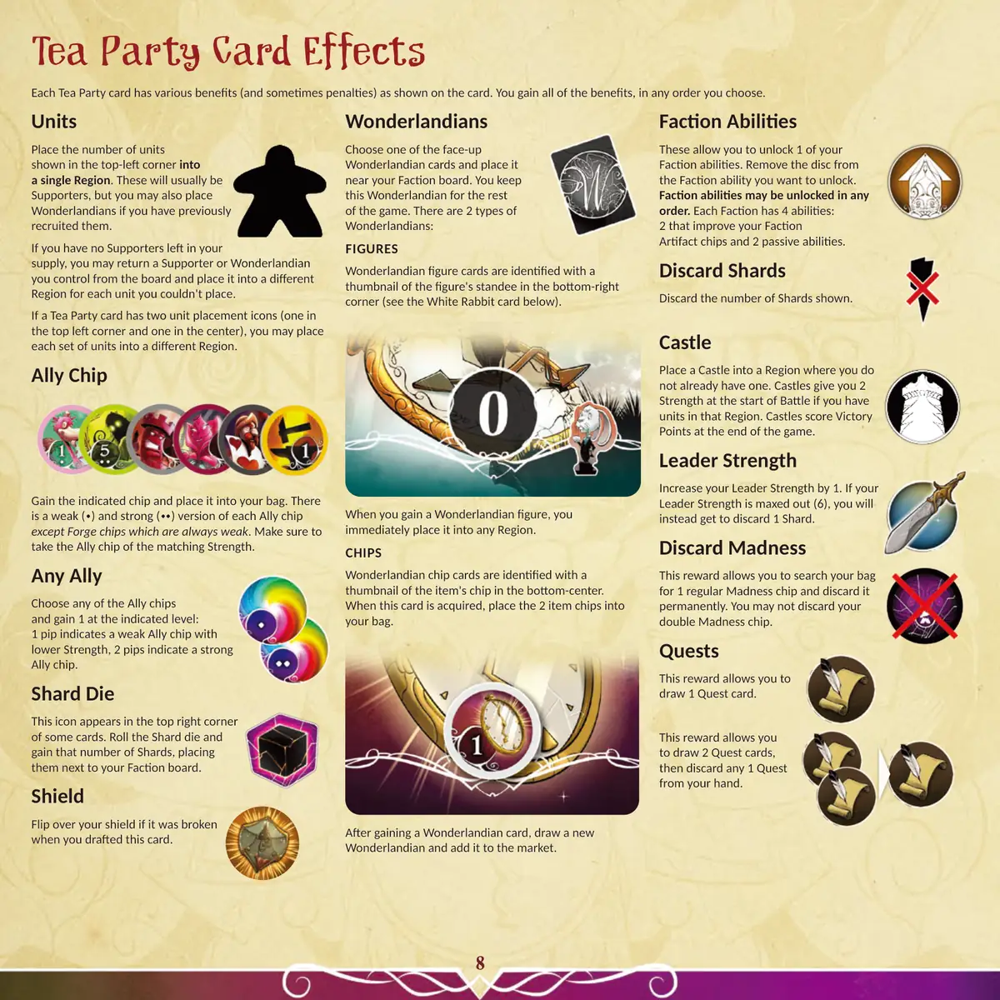
📝 第 8 页 AI 机翻对照（点击展开）
茶会卡牌效果
每张茶会卡牌都有各种收益（有时还有惩罚），如卡牌所示。你可以按任意顺序获得所有收益。
单位
将左上角显示数量的单位放入一个区域。这些单位通常是支持者，但如果你之前已经招募了仙境人，你也可以放置仙境人。
如果你的供应中没有支持者剩余，你可以从版图上收回一个你控制的支持者或仙境人，并将它放入不同的区域，以替代每个无法放置的单位。
如果一张茶会卡牌有两个单位放置图标（一个在左上角，一个在中间），你可以将每组单位放入不同的区域。
盟友筹码
获得指定的筹码并将其放入你的袋子中。每种盟友筹码都有弱版(.)和强版(..)，锻造筹码除外，它们总是弱版。请确保获取对应强度的盟友筹码。
任意盟友
选择任意盟友筹码，并获得指定数量的1个筹码：
1个点表示弱盟友筹码，强度较低；2个点表示强盟友筹码。
碎片骰子
此图标出现在某些卡牌的右上角。掷碎片骰子并获得该数量的碎片，将其放在你的派系版图旁边。
护盾
如果你在抽取这张卡牌时护盾已破损，则将其翻回正面。
仙境人
选择一张面朝上的仙境人卡牌并将其放在你的派系版图附近。你可以在游戏剩余时间内保留这张仙境人。仙境人有2种类型：
人物
仙境人人物卡牌在右下角有该人物立体的缩略图（见下面的白兔卡牌）。
当你获得一个仙境人人物时，立即将其放入任意区域。
筹码
仙境人筹码卡牌在底部中间有该物品筹码的缩略图。
当获得这张卡牌时，将2个物品筹码放入你的袋子中。
获得仙境人卡牌后，抽取一张新的仙境人卡牌并将其加入市场。
派系能力
这些能力允许你解锁你的一个派系能力。移除你想要解锁的派系能力上的圆盘。
派系能力可以按任意顺序解锁。每个派系有4个能力：
2个提升你派系神器筹码的能力和2个被动能力。
丢弃碎片
丢弃显示数量的碎片。
城堡
放入一个你尚未拥有城堡的区域。如果你在该区域有单位，城堡在战斗开始时为你提供2点强度。城堡在游戏结束时计分胜利点。
领袖强度
将你的领袖强度增加1。如果你的领袖强度已达到上限(6)，则改为可以丢弃1个碎片。
丢弃疯狂
这个奖励允许你搜索你的袋子
用于1个疯狂指示物并将其永久弃置。你不能弃置你的双倍疯狂指示物。
任务
这个奖励允许你抽取1张任务卡。
这个奖励允许你抽取2张任务卡，然后从你的手牌中弃置任意1张任务。
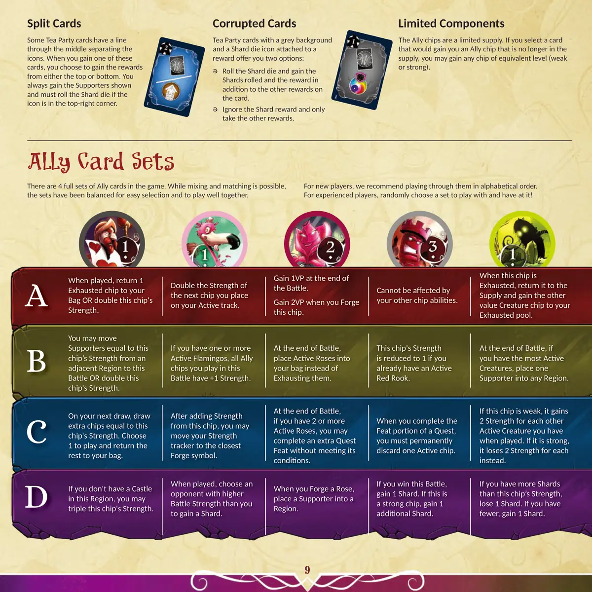
📝 第 9 页 AI 机翻对照（点击展开）
分体卡牌
一些茶会卡牌中间有一条线将图标分开。当你获得这些卡牌之一时，你可以选择获得上方或下方的奖励。你总是获得显示的支持者，如果图标在右上角，则必须掷骰子碎片。
腐化卡牌
灰色背景且骰子碎片图标附加在奖励上的茶会卡牌提供两个选项：
• 掷骰子碎片并获得掷出的碎片数量和奖励，以及卡牌上的其他奖励。
• 忽略骰子碎片奖励，只获取其他奖励。
有限组件
盟友筹码是有限供应的。如果你选择了一张能让你获得一个已不再供应中的盟友筹码的卡牌，你可以获得任何同等等级（弱或强）的筹码。
使用时，将1个已疲劳的筹码返回你的袋子，或者将此筹码的力量翻倍。
将你下一个放置在活跃轨道上的筹码的力量翻倍。
在战斗结束时获得1VP。
当你锻造此筹码时获得2VP。
不能被你的其他筹码能力影响。
当此筹码被疲劳时，将其返回供应库并将另一个数值的生物筹码放入你的疲劳池。
你可以将等于此筹码力量的支持者数量从相邻区域移动到此战斗中，或者将此筹码的力量翻倍。
如果你有一个或多个活跃的火烈鸟，你在此战斗中打出的所有盟友筹码+1力量。
在战斗结束时，将活跃的玫瑰放入你的袋子而不是将它们疲劳。
如果你已经有一个活跃的红乌鸦，此筹码的力量将降至1。
在战斗结束时，如果你有2个或更多活跃的玫瑰，你可以不满足条件的情况下额外完成一个任务功绩。
当你完成任务的任务部分时，你必须永久弃置一个活跃筹码。
如果此筹码是弱筹码，打出时每有一个其他活跃生物，它就获得2力量。如果是强筹码，则每有一个其他活跃生物，它反而失去2力量。
如果你在此区域没有城堡，你可以将此筹码的力量翻三倍。
打出时，选择一个战斗力量高于你的对手来获得一个碎片。
当你锻造玫瑰时，将一个支持者放入一个区域。
如果你赢得此战斗，获得1个碎片。如果是强筹码，额外获得1个碎片。
如果你的碎片数量多于此筹码的力量，失去1个碎片。如果少于，获得1个碎片。
A
B
C
D
盟友卡牌组
游戏中有4套完整的盟友卡牌。虽然可以混合搭配，但
这些套组已经过平衡，便于选择且能很好地一起游戏。
对于新玩家，我们建议按字母顺序逐一游玩这些套组。
对于有经验的玩家，随机选择一个套组开始游戏吧！
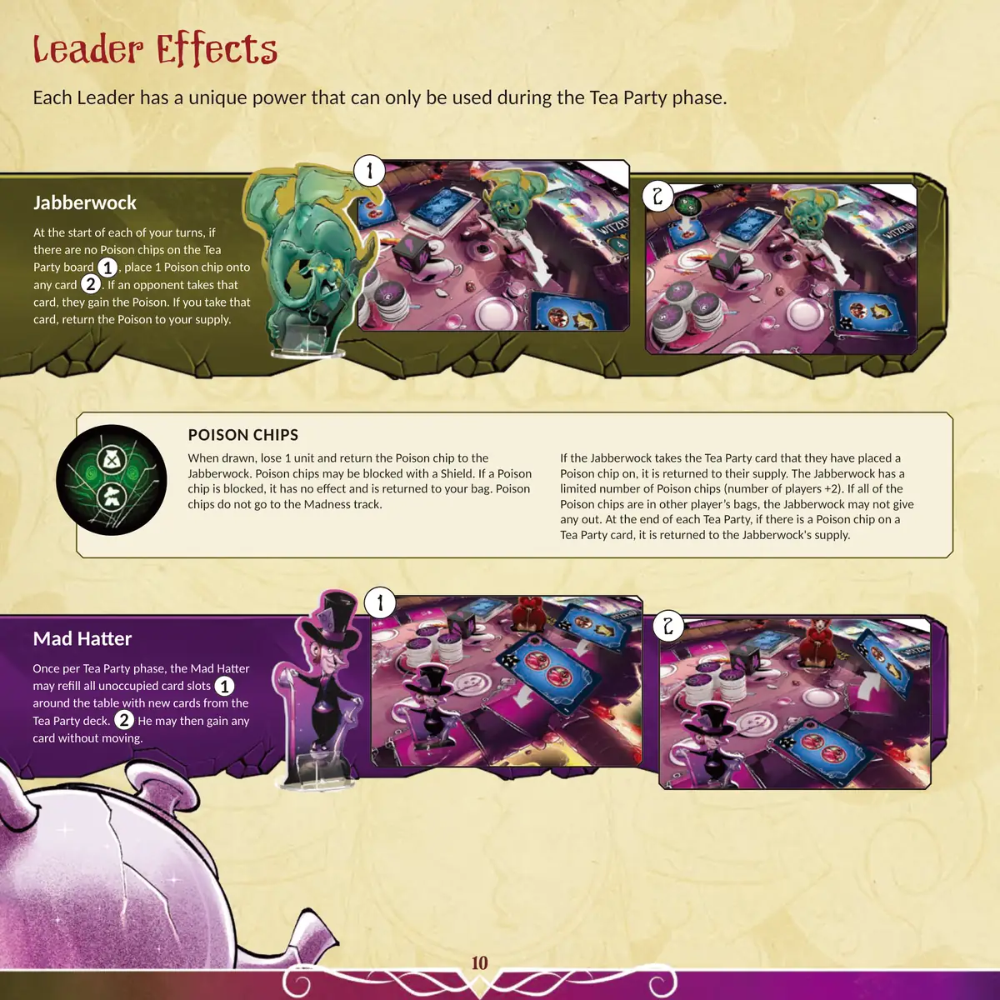
📝 第 10 页 AI 机翻对照（点击展开）
领袖效果
每位领袖都有一种独特能力，只能在茶会阶段使用。
炸毛虫（Jabberwock）
在你的每个回合开始时，如果茶会版图 1 上没有毒药指示物，则将1个毒药指示物放置到任意卡牌 2 上。如果对手拿走那张卡牌，他们会获得毒药。如果你拿走那张卡牌，将毒药归还到你的供应区。
疯帽匠（Mad Hatter）
每个茶会阶段限一次，疯帽匠可以从茶会牌库 2 中用新卡牌重新填充桌上所有未被占用的卡牌槽位 1 。然后他可以在不移位的情况下获得任意一张卡牌。
毒药指示物
抽到时，失去1个单位并将毒药指示物归还给炸毛虫。毒药指示物可以用盾牌阻挡。如果毒药指示物被阻挡，它没有效果并被归还到你的袋中。毒药指示物不会进入疯狂轨道。
如果炸毛虫拿走了他们放置了毒药指示物的茶会卡牌，该指示物会被归还到他们的供应区。炸毛虫的毒药指示物数量有限（玩家数量+2）。如果所有毒药指示物都在其他玩家的袋中，炸毛虫不能给出任何毒药指示物。在每个茶会结束时，如果茶会卡牌上有毒药指示物，它会被归还到炸毛虫的供应区。
<!--page:11 -->
红皇后（Red Queen）
在她的每个回合中，红皇后可以将单张卡牌 1 中的支持者放入多个区域 2 。
爱丽丝（Alice）
爱丽丝在获取茶会卡牌 2 时，总是逆时针 1 围绕桌子移动，而不是顺时针。
柴郡猫（Cheshire Cat）
在茶会期间，当你掷出碎片骰子 1 的2或3点时，你可以将获得的碎片中的1个给予任意玩家 2 。
在2人游戏中，一些领袖有不同的能力。确保在2人游戏时使用派系版图的2人面。
领袖效果（续）
每位领袖都有一种独特能力，只能在茶会阶段使用。
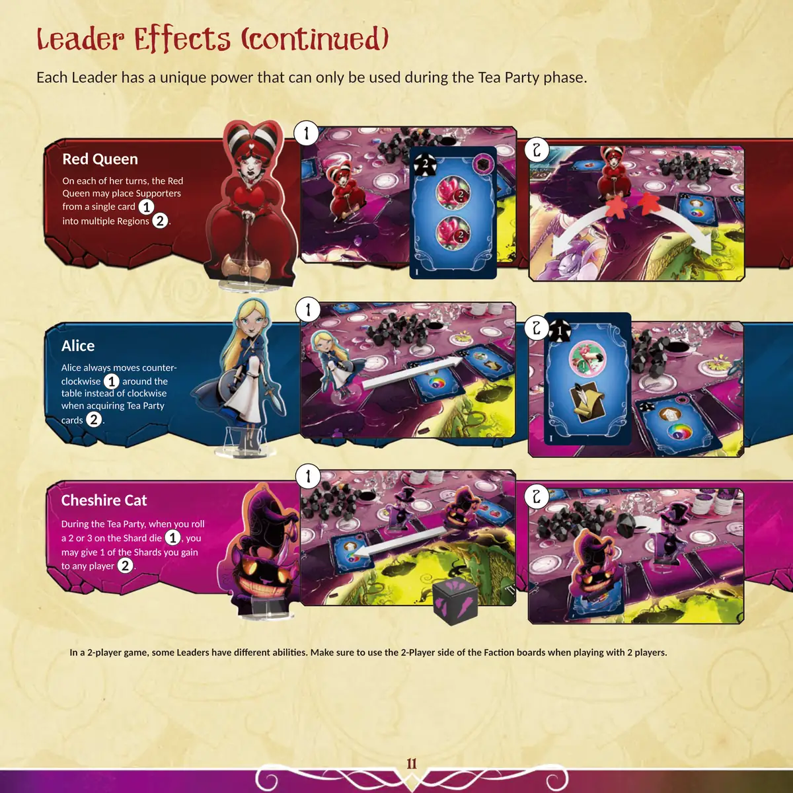
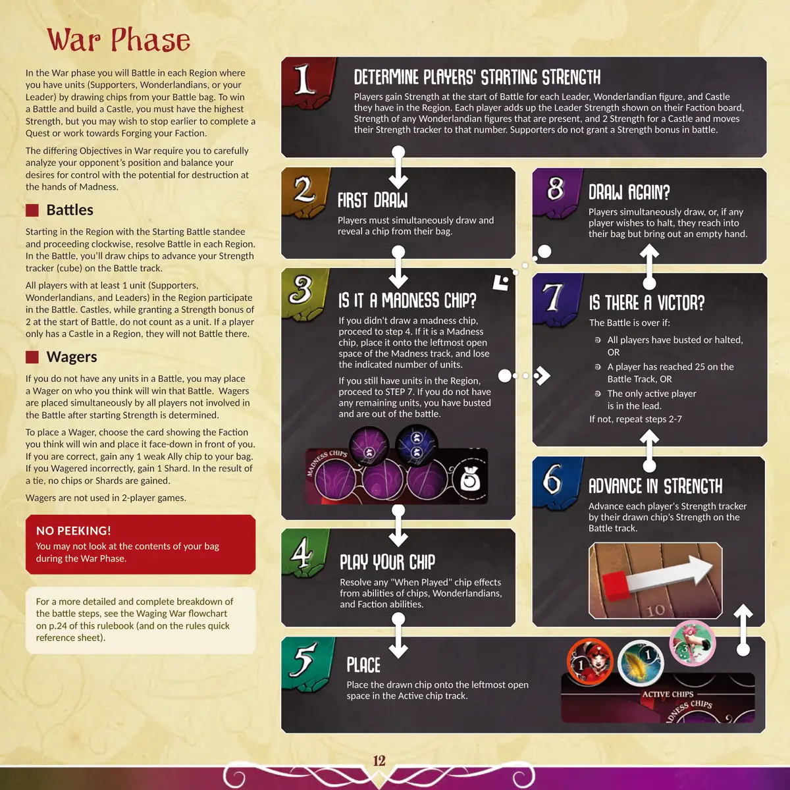
📝 第 12 页 AI 机翻对照（点击展开）
战争阶段
在战争阶段，你将在每个拥有单位（支持者、仙境人或你的领袖）的地区通过从你的战斗袋中抽取筹码来进行战斗。要赢得战斗并建造城堡，你必须拥有最高的力量值，但你可能希望更早停止以完成一项任务或为你派系的锻造而努力。
战争中的不同目标要求你仔细分析对手的局势，平衡你对控制的渴望与在疯狂手中被摧毁的可能性。
战斗
从有起始战斗标记的地区开始，顺时针方向解决每个地区的战斗。
在战斗中，你将抽取筹码来推进你在战斗轨道上的力量值追踪器（立方体）。
所有在该地区至少有1个单位（支持者、仙境人和领袖）的玩家都参与战斗。城堡虽然在战斗开始时提供2点力量值加成，但不计为一个单位。如果一个玩家在一个地区只有城堡，他们将不会在那里战斗。
下注
如果你在战斗中没有单位，你可以对谁将赢得该战斗下注。下注由所有未参与战斗的玩家在确定起始力量值后同时进行。
要下注，选择你认为会赢的派系卡牌，并将其面朝下放在你面前。如果你猜对了，从你的袋中获得任意1个弱小盟友筹码。如果你下注错误，获得1个碎片。在平局的情况下，不获得筹码或碎片。
下注不用于2人游戏。
不准偷看！
在战争阶段期间，你不能查看你袋子里的内容。
有关战斗步骤更详细和完整的分解，请参阅本规则书第24页的战争流程图（以及规则速查表）。
首次抽取
玩家必须同时从他们的袋子中抽取并展示一个筹码。
是否有胜利者？
如果满足以下任一条件，战斗结束：
t 所有玩家都已爆牌或停止，
或者
t 有玩家已达到战斗轨道上的25点，
或者
t 唯一活跃的玩家处于领先地位。
如果未满足，重复步骤2-7
再次抽取？
玩家同时抽取筹码，或者如果有任何玩家希望停止，他们伸手进入袋子但拿出空手。
是疯狂筹码吗？
如果你没有抽取到疯狂筹码，进入步骤4。如果是疯狂筹码，将其放置在疯狂轨道上最左边的空位上，并失去指定数量的单位。
如果你在该地区仍有单位，进入步骤7。如果你没有剩余的单位，你已经爆牌并退出战斗。
提升力量值
根据玩家抽取筹码的力量值，在战斗轨道上推进每个玩家的力量值追踪器。
打出你的筹码
解决来自筹码能力、仙境人和派系能力的"打出时"效果。
放置
将抽到的指示物放置在活跃指示物轨道上最左边的空位。
确定玩家的初始力量
玩家在战斗开始时根据其在区域内的每位领袖、仙境人物和城堡获得力量。每位玩家将其派系版图上显示的领袖力量、任何存在的仙境人物的力量以及城堡的2点力量相加，并将他们的力量指示物移动到该数字。支持者在战斗中不提供力量加成。
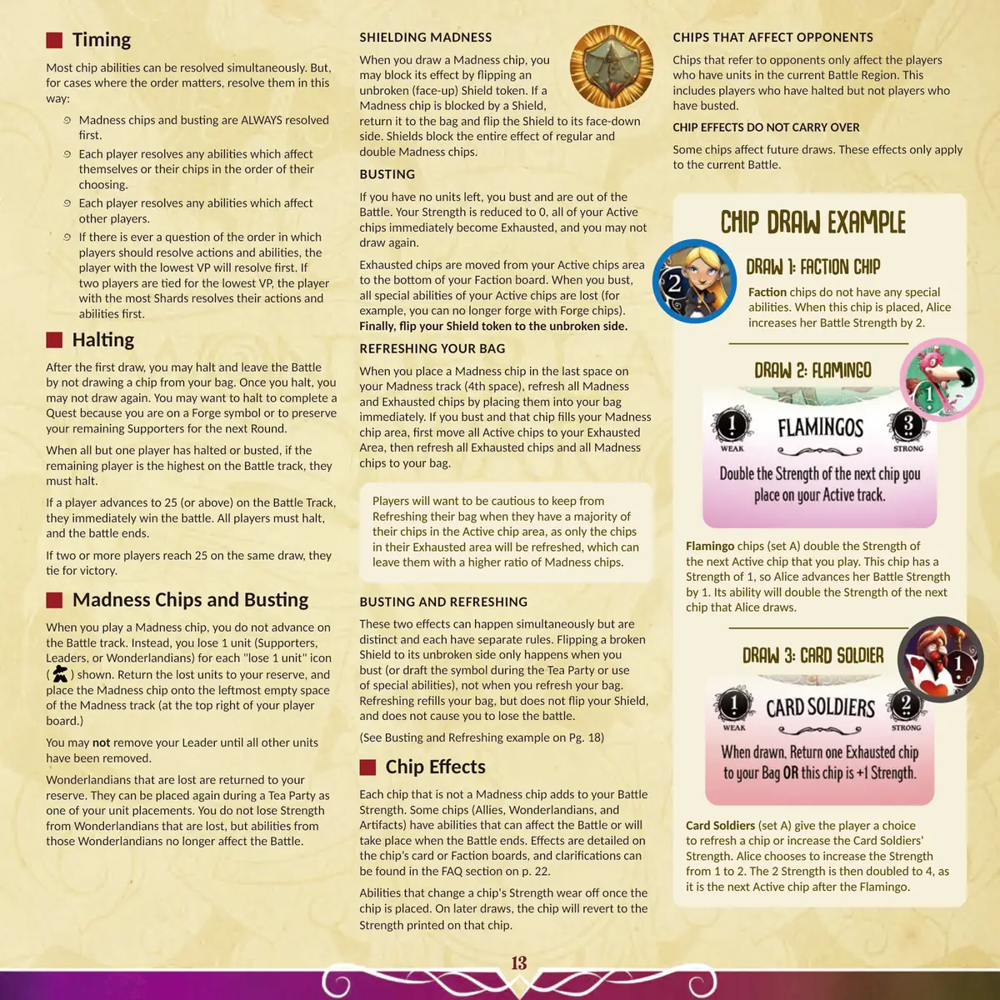
📝 第 13 页 AI 机翻对照（点击展开）
时机
大多数指示物能力可以同时解决。但是，对于顺序重要的情况，按以下方式解决：
d 疯狂指示物和爆牌总是首先解决。
d 每位玩家按自己选择的顺序解决影响自己或其指示物的任何能力。
d 每位玩家解决影响其他玩家的任何能力。
d 如果存在玩家应如何解决行动和能力的顺序问题，则VP最低的玩家先解决。如果有两位玩家并列最低VP，则拥有最多碎片的玩家先解决其行动和能力。
停止
在第一次摸牌后，你可以通过不从你的袋中摸取指示物来停止并离开战斗。一旦停止，你不能再摸牌。你可能想要停止以完成一个任务，因为你在一个锻造符号上，或者为下一轮保留你的剩余支持者。
当除一名玩家外的所有玩家都已停止或爆牌时，如果剩余的玩家在战斗轨道上位置最高，他们必须停止。
如果一名玩家在战斗轨道上前进到25（或以上），他们立即赢得战斗。所有玩家必须停止，战斗结束。
如果两名或更多玩家在同一轮摸牌中达到25，他们则平局获胜。
疯狂指示物和爆牌
当你打出一张疯狂指示物时，你不会在战斗轨道上前进。相反，你每显示一个"失去1个单位"图标(
)就失去1个单位（支持者、领导者或仙境人）。将失去的单位归还到你的储备区，并将疯狂指示物放到疯狂轨道的最左侧空位上（在你的玩家版图右上角）。
在所有其他单位被移除之前，你不能移除你的领导者。
失去的仙境人归还到你的储备区。它们可以在茶会期间作为你的单位放置之一再次放置。你不会因失去的仙境人而失去力量，但那些仙境人的能力不再影响战斗。
抵御疯狂
当你摸到一张疯狂指示物时，
你可以通过翻转一个完整的（正面朝上）盾牌指示物来阻止其效果。如果一张疯狂指示物被盾牌阻止，将其归还到袋中并将盾牌翻到反面。盾牌可以阻止普通和双倍疯狂指示物的全部效果。
爆牌
如果你没有单位剩余，你就爆牌并退出战斗。你的力量降至0，你所有的激活指示物立即变为疲劳状态，并且你不能再摸牌。
疲劳状态的指示物从你的激活指示物区域移到你的派系版图底部。当你爆牌时，你所有激活指示物的特殊能力都会丢失（例如，你不能再使用锻造指示物进行锻造）。最后，将你的盾牌指示物翻到完整的一面。
补充你的袋
当你将一张疯狂指示物放在最后一位空格时
疯狂值轨道（第4格），通过立即将所有疯狂值和疲惫指示物放入你的袋子来刷新它们。如果你爆表且该指示物填满了你的疯狂值指示物区域，首先将所有活跃指示物移至你的疲惫区域，然后将所有疲惫指示物和所有疯狂值指示物刷新到你的袋子中。
玩家需要谨慎，避免在大部分指示物位于活跃指示物区域时刷新他们的袋子，因为只有他们疲惫区域中的指示物会被刷新，这可能导致他们拥有更高比例的疯狂值指示物。
爆表与刷新
这两个效果可能同时发生，但它们是不同的，并且各有独立的规则。将破损的盾牌翻回未破损的一面只在你爆表时发生（或者在茶会期间抽取符号或使用特殊能力时），而不是在你刷新袋子时。刷新会补充你的袋子，但不会翻转你的盾牌，也不会导致你输掉战斗。
（参见第18页的爆表与刷新示例）
指示物效果
每个非疯狂值指示物都会增加你的战斗强度。一些指示物（盟友、仙境居民和神器）具有可以影响战斗或在战斗结束时触发的能力。效果详见指示物卡牌或派系版图，澄清内容可在第22页的常见问题解答部分找到。
改变指示物强度的能力在指示物被放置后就会失效。在后续抽取中，该指示物将恢复到该指示物上印制的强度。
影响对手的指示物
提及对手的指示物只影响在当前战斗区域中有单位的玩家。这包括已暂停的玩家，但不包括已爆表的玩家。
指示物效果不会延续
一些指示物会影响未来的抽取。这些效果仅适用于当前战斗。
指示物抽取示例
抽取1：派系指示物
派系指示物没有任何特殊能力。当该指示物被放置时，爱丽丝的战斗强度增加2点。
抽取2：火烈鸟
火烈鸟指示物（A组）会使你下一个放置的活跃指示物的强度翻倍。该指示物强度为1，因此爱丽丝的战斗强度前进1点。其能力将使爱丽丝下一个抽取的指示物强度翻倍。
抽取3：纸牌士兵
纸牌士兵（A组）给玩家选择刷新一个指示物或增加纸牌士兵强度的机会。爱丽丝选择将强度从1增加到2。然后，由于这是火烈鸟之后的下一个活跃指示物，2点强度被翻倍为4点。
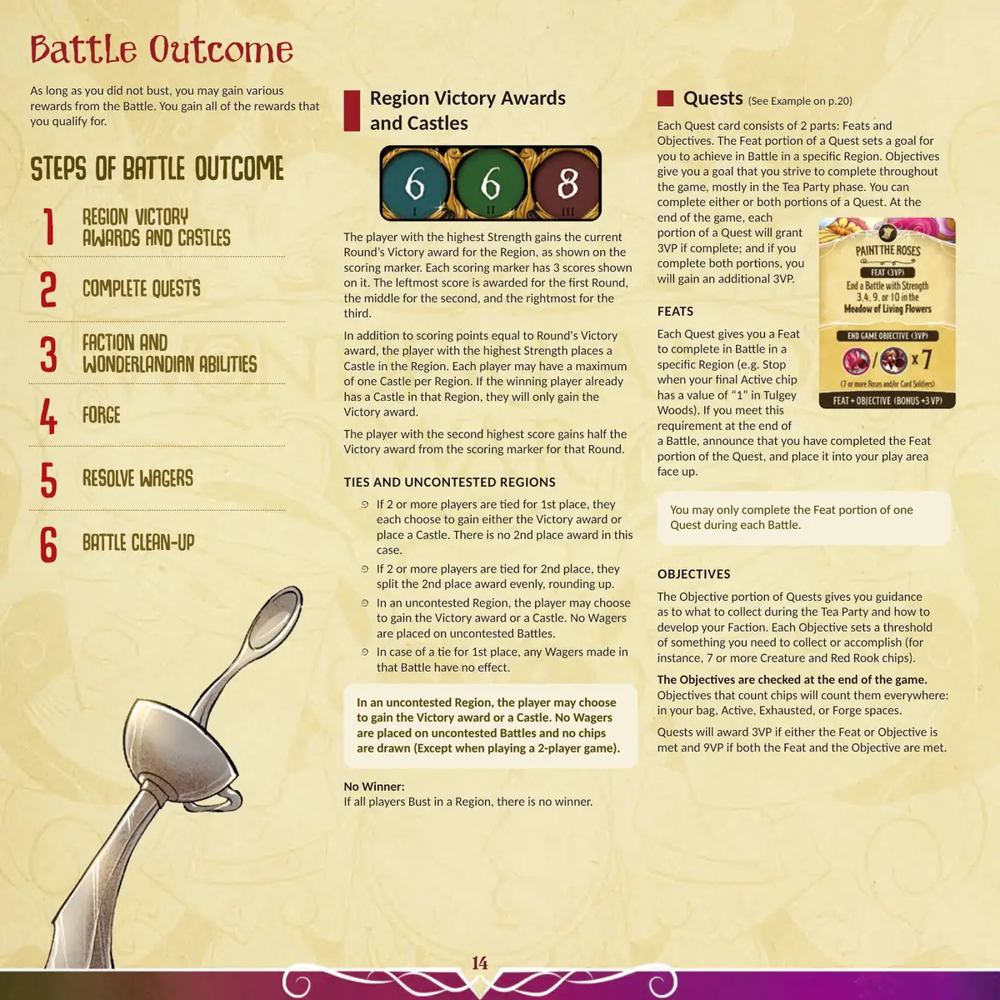
📝 第 14 页 AI 机翻对照（点击展开）
战斗结果
只要你没有爆牌，你就可以从战斗中获得各种奖励。你会获得所有你有资格获得的奖励。
战斗结果步骤
区域胜利奖励和城堡
力量最高的玩家获得当前轮在该区域的胜利奖励，如记分标记所示。每个记分标记上有3个分数。最左边的分数在第一轮获得，中间的在第二轮获得，最右边的在第三轮获得。
除了获得等于轮次胜利奖励的分数外，力量最高的玩家还在该区域放置一个城堡。每个玩家在每个区域最多可以有一个城堡。如果获胜玩家在该区域已经有一个城堡，他们将只获得胜利奖励。
分数第二高的玩家获得记分标记上该轮胜利奖励的一半。
平局和未争夺的区域
d 如果2个或更多玩家并列第一名，他们各自选择获得胜利奖励或放置城堡。在这种情况下没有第二名奖励。
d 如果2个或更多玩家并列第二名，他们平分第二名奖励，向上取整。
d 在未争夺的区域，玩家可以选择获得胜利奖励或一个城堡。未争夺的战斗不放置赌注。
d 如果出现第一名平局，在该战斗中下注的任何赌注都无效。
在未争夺的区域，玩家可以选择获得胜利奖励或一个城堡。未争夺的战斗不放置赌注，也不抽取筹码（除非进行2人游戏）。
没有获胜者：
如果所有玩家在某个区域都爆牌，则没有获胜者。
任务（见第20页示例）
每张任务卡由两部分组成：功绩和目标。任务的功绩部分为你设定了在特定区域的战斗中需要达成的目标。目标部分则为你提供了在整个游戏中（主要在茶会阶段）需要努力完成的目标。你可以完成任务的任一部分或两部分。在游戏结束时，如果任务完成，每部分将授予3VP；如果你同时完成了两部分，你将额外获得3VP。
功绩
每个任务都为你设定了一个在特定区域的战斗中需要完成的功绩（例如，在图尔吉森林(Tulgey Woods)中，当你最终的激活筹码值为"1"时停止）。如果你在战斗结束时满足了这个要求，宣布你已完成任务的功绩部分，并将其正面朝上放置在你的游戏区域。
你只能在每场战斗中完成一个任务的功绩部分。
目标
任务的目标部分为你提供了在茶会期间收集什么以及如何发展派系的指导。每个目标都设定了你需要收集或完成的事物的阈值（例如，7个或更多的生物和红鸦筹码）。
目标在游戏结束时检查。
计分目标会计算所有地方的筹码：
在你的袋子里、活跃区、耗尽区或锻造区。
任务如果达成壮举或目标将获得3VP，如果同时达成壮举和目标将获得9VP。
地区胜利
奖励和城堡
解决竞标
战斗清理
完成任务
派系和
仙境能力
锻造
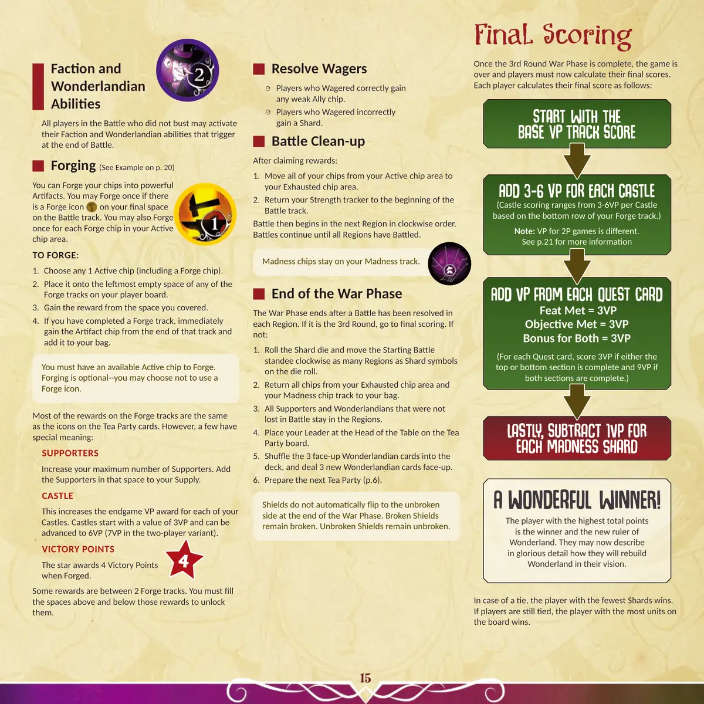
📝 第 15 页 AI 机翻对照（点击展开）
派系与
仙境能力
战斗中所有未爆牌的玩家可以激活他们在战斗结束时触发的派系和仙境能力。
锻造（参见第20页的示例）
你可以将你的筹码锻造为强大的神器。如果你的战斗轨道上的最终空间有一个锻造图标，你可以锻造一次。你也可以为你的活跃筹码区域中的每个锻造筹码各锻造一次。
锻造步骤：
- 选择任意1个活跃筹码（包括锻造筹码）。
2. 将其放置在你的玩家版图上任意锻造轨道的最左侧空位上。
- 获得你所覆盖空间的奖励。
4. 如果你完成了一个锻造轨道，立即获得该轨道末端的神器筹码并将其加入你的袋子。
你必须有一个可用的活跃筹码才能进行锻造。
锻造是可选的——你可以选择不使用锻造图标。
锻造轨道上的大多数奖励与茶会卡牌上的图标相同。然而，少数有特殊含义：
支持者
增加你的支持者最大数量。将该空间中的支持者加入你的供应区。
城堡
这会增加你每个城堡的终局胜利点奖励。城堡初始值为3VP，可以升级到6VP（双人变体中为7VP）。
胜利点
星星在锻造时奖励4个胜利点。
有些奖励位于两个锻造轨道之间。你必须填充这些奖励上方和下方的空间才能解锁它们。
解决赌注
d 正确下注的玩家获得任何弱小盟友筹码。
d 错误下注的玩家获得一个碎片。
战斗清理
在领取奖励后：
1. 将你所有筹码从活跃筹码区域移到疲惫筹码区域。
2. 将你的力量指示器移回战斗轨道的起点。
然后按顺时针顺序在下一个区域开始战斗。战斗持续进行，直到所有区域都完成战斗。
疯狂筹码留在你的疯狂轨道上。
战争阶段结束
在每个区域都完成战斗后，战争阶段结束。如果是第3轮，则进入最终计分。如果不是：
1. 投掷碎片骰子，并将起始战斗指示器按顺时针方向移动骰子结果中碎片符号的数量。
2. 将你疲惫筹码区域和疯狂筹码轨道中的所有筹码放回你的袋子。
3. 所有在战斗中未失去的支持者和仙境角色都留在各自区域。
4. 将你的领袖放在茶会版图的桌子首位。
- 将3张正面朝上的仙境卡牌洗入牌库，并重新发3张新的仙境卡牌正面朝上。
- 准备下一场茶会（第6页）。
护盾在战争阶段结束时不会自动翻转到未破损面。破损的护盾保持破损，未破损的护盾保持未破损。
最终计分
一旦第3轮战争阶段完成，游戏就
游戏结束，玩家现在必须计算他们的最终分数。
每位玩家按如下方式计算最终分数：
从基础VP轨道分数开始
为每个城堡添加3-6 VP
（城堡得分基于你锻造轨道的底行，每个城堡得分为3-6VP）
注意：双人游戏的VP不同。
更多信息请见第21页
添加每张任务卡的VP
达成成就 = 3VP
达成目标 = 3VP
两者都达成 = 3VP
（对于每张任务卡，如果顶部或底部部分完成则得3VP，如果两部分都完成则得9VP）
最后，减去每个疯狂碎片1VP
一位出色的获胜者！
总分最高的玩家是获胜者，也是仙境的新统治者。他们现在可以详细描述他们将如何按照自己的愿景重建仙境。
如果平局，拥有最少碎片的玩家获胜。
如果玩家仍然平局，则版图上单位最多的玩家获胜。
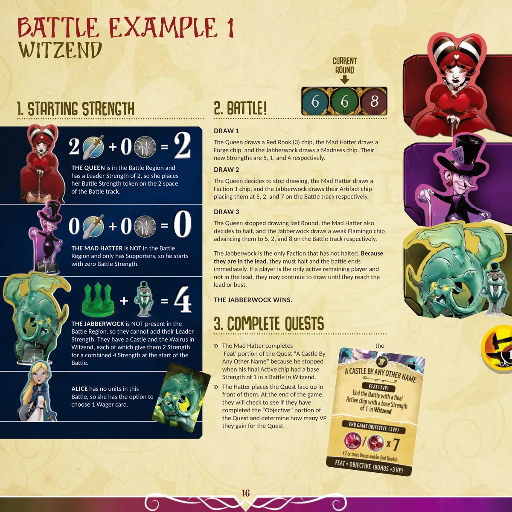
📝 第 16 页 AI 机翻对照（点击展开）
- 战斗！
抽牌 1
皇后抽到一张红车(3)指示物，疯帽子抽到一张锻造指示物，而 jabberwock 抽到一张疯狂指示物。他们的新力量值分别是 5、1 和 4。
抽牌 2
皇后决定停止抽牌，疯帽子抽到一张派系1指示物，而 jabberwock 抽到他们的神器指示物，使他们在战斗轨道上分别达到 5、2 和 7 的位置。
抽牌 3
皇后在上一轮停止了抽牌，疯帽子也决定停止，而 jabberwock 抽到一张弱火烈鸟指示物，使他们在战斗轨道上分别达到 5、2 和 8 的位置。jabberwock 是唯一没有停止的派系。因为他们处于领先地位，他们必须停止，战斗立即结束。如果玩家是唯一剩下的活跃玩家且不处于领先地位，他们可以继续抽牌直到他们达到领先或爆牌。
JABBERWOCK 获胜。
- 完成任务
t 疯帽子完成了任务"任何其他名字的城堡"的"功绩"部分，因为他在战斗中当他的最后一张活跃指示物基础力量值为1时停止了。
t 疯帽子将任务牌正面朝上放在自己面前。游戏结束时，他们将检查是否完成了该任务的"目标"部分，并确定他们从该任务中获得多少 VP。
1. 初始力量
战斗示例 1
威曾德(WITZEND)
+
=2
皇后在战斗区域中，拥有领导者力量2，因此她将她的战斗力量指示物放在战斗轨道的2格上。
疯帽子不在战斗区域中，只有支持者，所以他初始战斗力量为0。
jabberwock 不在战斗区域中，所以他们不能添加他们的领导者力量。他们在威曾德(Witzend)拥有一座城堡和海象，每个提供2点力量，因此在战斗开始时他们共有4点力量。
爱丽丝在此战斗中没有单位，所以她可以选择1张下注卡牌。
+
=4
+
=0
当前轮
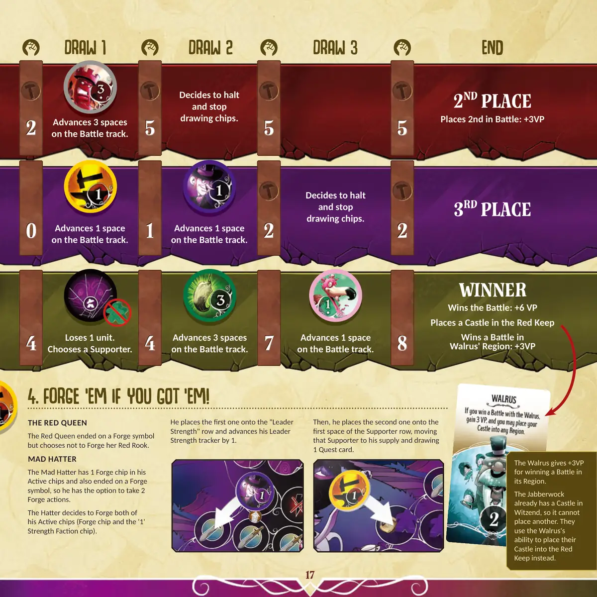
📝 第 17 页 AI 机翻对照（点击展开）
获胜者
第二名
第三名
在战斗轨道上前进3格。
在战斗轨道上前进3格。
在战斗轨道上前进1格。
在战斗轨道上前进1格。
赢得战斗：+6 VP
在红堡放置一座城堡
在海象区域赢得战斗：+3VP
在战斗中获得第二名：+3VP
在战斗轨道上前进1格。
决定停止
并停止
抽取筹码。
决定停止
并停止
抽取筹码。
失去1个单位。
选择1个支持者。
- 如果你有的话，就锻造它们！
红皇后
红皇后结束于一个锻造符号，但选择不锻造她的红车。
疯帽匠
疯帽匠在他的激活筹码中有1个锻造筹码，并且也结束于一个锻造符号，因此他可以选择进行2次锻造行动。
帽匠决定锻造他的两个激活筹码（锻造筹码和"1"力量派系筹码）。
他将第一个筹码放置到"领袖力量"行上，并将他的领袖力量指示物前进1格。
然后，他将第二个筹码放置到支持者行的第一个格位，将该支持者移至他的供应区，并抽取1张任务卡。
抽取1张
抽取2张
抽取3张
结束
海象为在其区域赢得战斗提供+3VP。
jabberwock（贾巴沃克）已经在Witzend拥有一座城堡，因此无法再放置另一座。他们使用海象的能力将他们的城堡放置到红堡中。
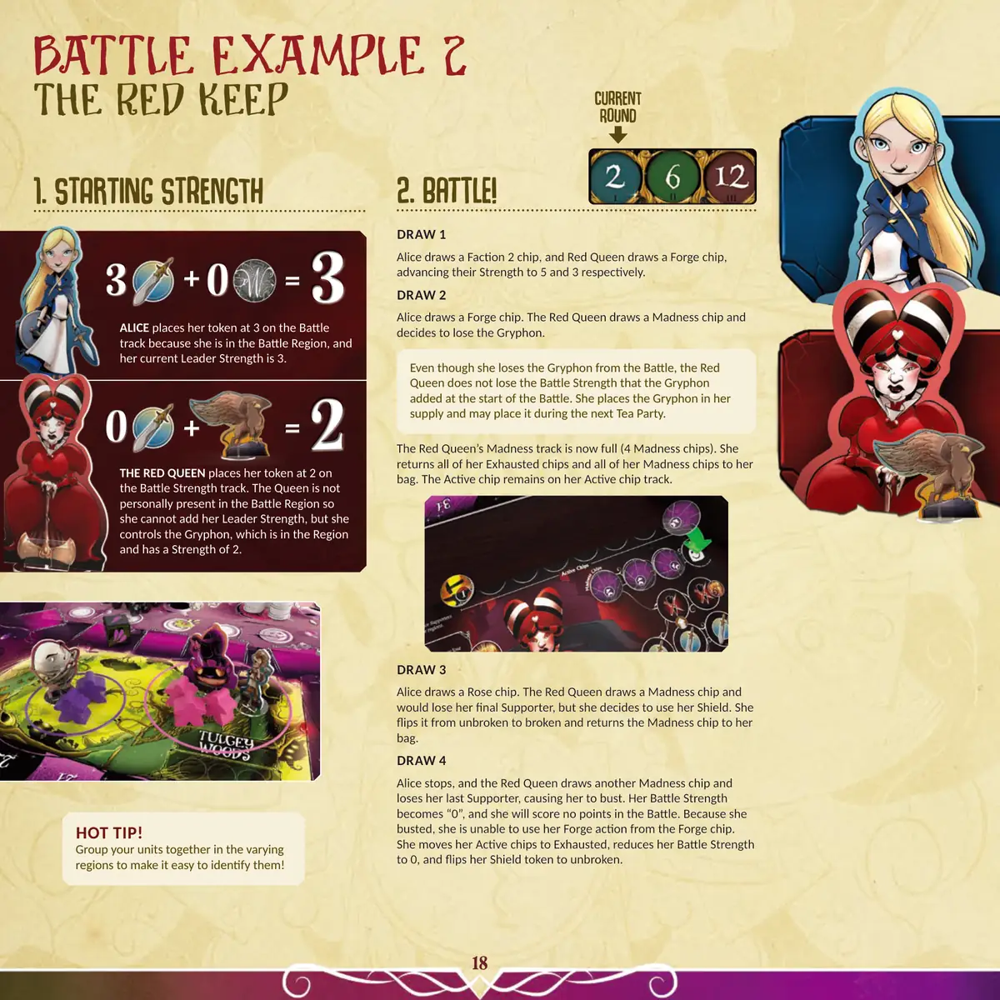
📝 第 18 页 AI 机翻对照（点击展开）
- 战斗！
抽牌 1
爱丽丝抽到一张派系2的指示物，红皇后抽到一张锻造指示物，
分别将他们的力量提升到5和3。
抽牌 2
爱丽丝抽到一张锻造指示物。红皇后抽到一张疯狂指示物并
决定失去狮鹫。
尽管她在战斗中失去了狮鹫，红皇后不会失去狮鹫在
战斗开始时增加的战斗力量。她将狮鹫放入她的供应区，
并在下一次茶会期间可以放置它。
红皇后的疯狂轨道现已满（4张疯狂指示物）。她将
她所有的疲惫指示物和所有的疯狂指示物都放回她的袋子。
活跃指示物仍留在她的活跃指示物轨道上。
抽牌 3
爱丽丝抽到一张玫瑰指示物。红皇后抽到一张疯狂指示物并
会失去她最后的支持者，但她决定使用她的盾牌。她将盾牌
从完好状态翻转为破损状态，并将疯狂指示物放回她的袋子。
抽牌 4
爱丽丝停止抽牌，红皇后又抽到一张疯狂指示物并
失去她最后一个支持者，导致她爆牌。她的战斗力量
变为"0"，她将在战斗中不得分。由于她爆牌，
她无法使用她从锻造指示物获得的锻造行动。
她将她的活跃指示物移至疲惫状态，将她的战斗力量降至0，
并将她的盾牌指示物翻转为完好状态。
爱丽丝将她的指示物放置在战斗轨道的3上，
因为她位于战斗区域，且她当前的领袖力量是3。
红皇后将她的指示物放置在战斗力量轨道的2上。
皇后本人不在战斗区域，因此她无法添加她的领袖力量，
但她控制着位于该区域的狮鹫，其力量为2。
=
=
+
+
1. 初始力量
战斗示例 2
红色城堡
当前
轮
提示！
将你的单位聚集在不同的区域中，
以便轻松识别它们！
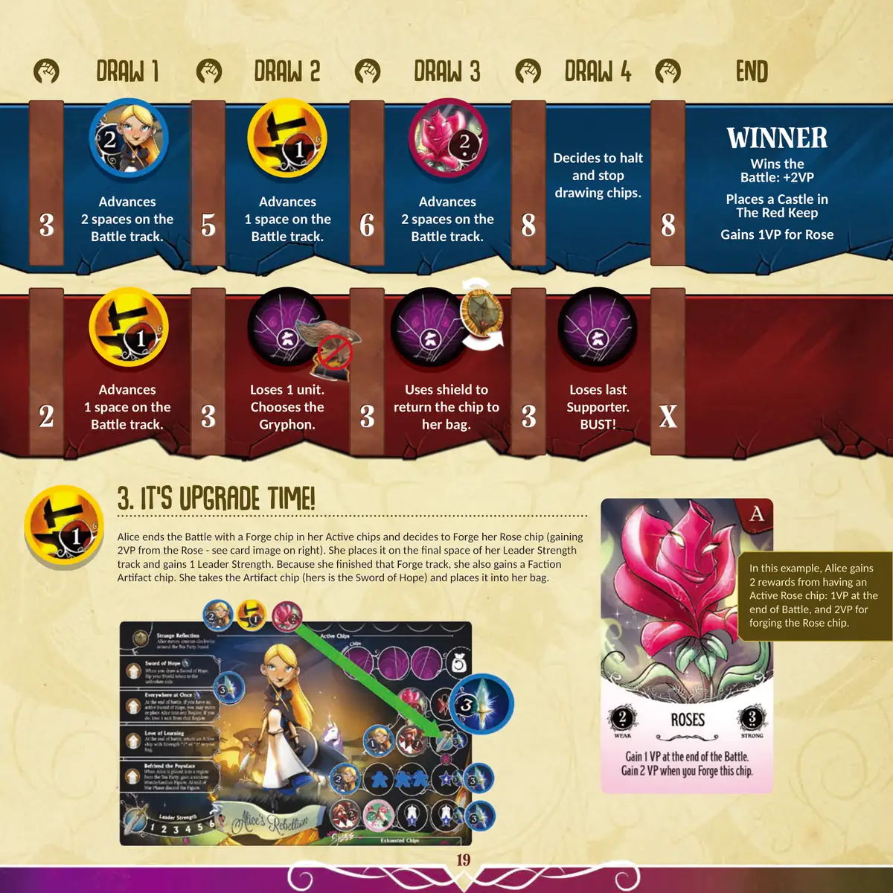
📝 第 19 页 AI 机翻对照（点击展开）
摸牌 1
摸牌 2
摸牌 3
摸牌 4
结束
进阶
在战斗轨道上前进 2 格。
决定停止并停止抽取筹码。
X
失去 1 个单位。
选择狮鹫。
在战斗轨道上前进 1 格。
使用护盾将筹码放回她的袋中。
失去最后一个支持者。
爆牌！
在战斗轨道上前进 1 格。
在战斗轨道上前进 2 格。
获胜者
赢得战斗：+2VP
在红堡中放置一座城堡
因玫瑰获得 1VP
- 是时候升级了！
Alice 以一个锻造筹码在她的激活筹码中结束战斗，并决定锻造她的玫瑰筹码（从玫瑰获得 2VP - 见右侧卡牌图像）。她将其放置在她的领袖力量轨道的最后一个格子上，并获得 1 点领袖力量。因为她完成了那个锻造轨道，她还获得一个派系神器筹码。她拿取神器筹码（她的是希望之剑）并将其放入她的袋中。
在这个例子中，Alice 因拥有一个激活的玫瑰筹码获得 2 个奖励：战斗结束时获得 1VP，以及锻造玫瑰筹码获得 2VP。
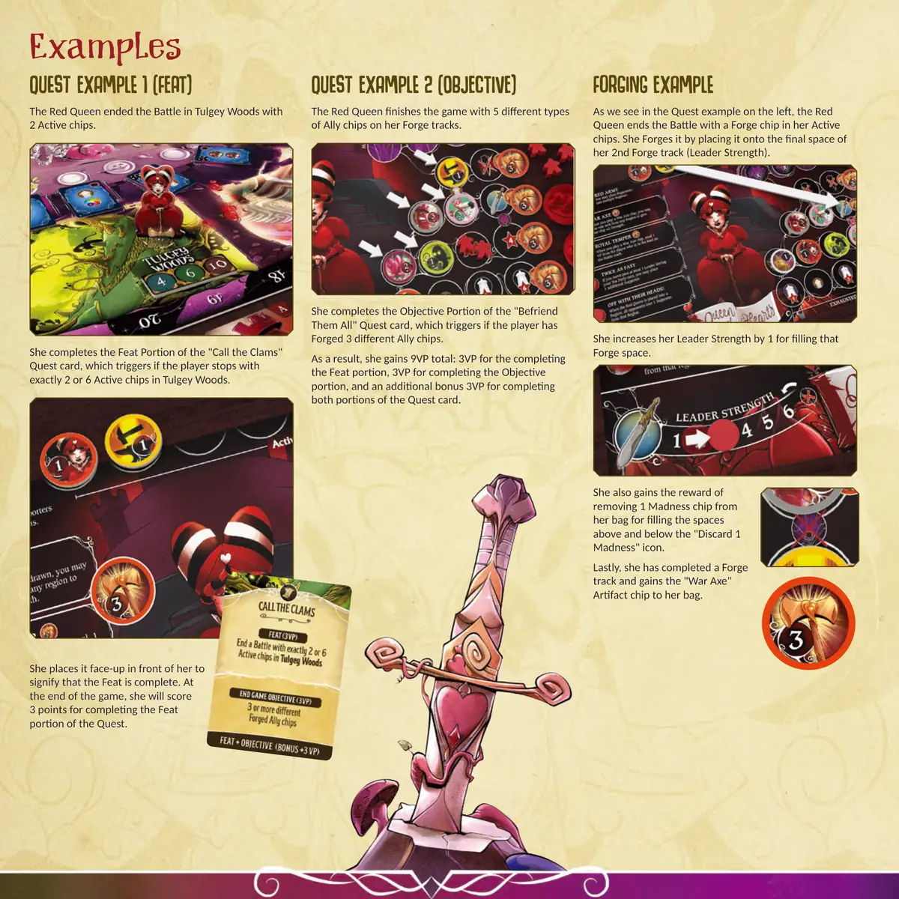
📝 第 20 页 AI 机翻对照（点击展开）
示例
任务示例 1（功绩）
红皇后在图尔格森林以 2 个激活筹码结束战斗。
她完成了"召唤蛤蜊"任务卡的功绩部分，该部分在玩家在图尔格森林恰好有 2 个或 6 个激活筹码时触发。
她将其正面朝上放在自己面前以表示功绩已完成。游戏结束时，她将因完成任务的功绩部分获得 3 分。
任务示例 2（目标）
红皇后在游戏结束时，她的锻造轨道上有 5 种不同的盟友筹码。
她完成了"与它们交朋友"任务卡的目标部分，该部分在玩家锻造了 3 种不同的盟友筹码时触发。
因此，她总共获得 9VP：完成功绩部分获得 3VP，完成目标部分获得 3VP，以及因完成任务卡的两个部分额外获得 3VP 奖励。
锻造示例
如我们在左侧的任务示例中看到的，红皇后以一个锻造筹码在她的激活筹码中结束战斗。她通过将其放置在她的第二个锻造轨道（领袖力量）的最后一个格子上来锻造它。
她因填满那个锻造格子而增加 1 点领袖力量。
她还获得奖励：因填满"弃置 1 疯狂"图标上方和下方的格子，从她的袋中移除 1 个疯狂筹码。
最后，她完成了一个锻造轨道，并获得"战斧"神器筹码放入她的袋中。
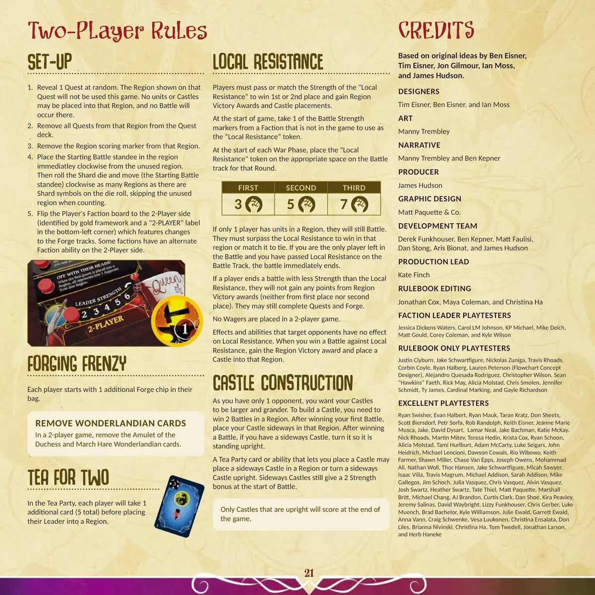
📝 第 21 页 AI 机翻对照（点击展开）
双人规则
设置
- 随机揭示1个任务。该任务上显示的地区在本局游戏中将不使用。任何单位或城堡都不能放置在该地区，也不会发生战斗。
2. 从任务牌库中移除该地区的所有任务。
- 从该地区移除地区记分标记。
4. 将起始战斗指示物放置在未使用地区顺时针方向的相邻地区。然后掷碎片骰子，并将（起始战斗指示物）顺时针移动骰子结果上碎片符号数量的地区数，计数时跳过未使用地区。
- 将玩家派系板翻到双人面（由金色框架和左下角的"2-PLAYER"标签标识），该面有锻造轨道的变化。一些派系在双人面有替代的派系能力。
锻造狂热
每位玩家在他们的袋中额外开始有1个锻造筹码。
移除仙境卡牌
在双人游戏中，移除公爵夫人的护身符和疯帽匠仙境卡牌。
双人茶会
在茶会中，每位玩家在将领袖放入地区前将额外抽取1张卡牌（总共5张）。
地方抵抗
玩家必须通过或匹配"地方抵抗"的力量才能获得第一名或第二名，并获得地区胜利奖励和城堡放置。
游戏开始时，从未参与游戏的派系中取出1个战斗力量标记，用作"地方抵抗"指示物。
在每个战争阶段开始时，将"地方抵抗"指示物放置在该轮战斗轨道上对应的空间。
第一名
第二名
第三名
如果只有一个玩家在某个地区有单位，他们仍然会战斗。他们必须超过地方抵抗才能在该地区获胜，或匹配它以平局。如果你是战斗中唯一剩下的玩家，并且你在战斗轨道上已经通过了地方抵抗，战斗立即结束。
如果一个玩家结束战斗时的力量低于地方抵抗，他们将不会从地区胜利奖励中获得任何分数（无论是第一名还是第二名）。他们仍然可以完成任务和锻造。
在双人游戏中不进行任何下注。
针对对手的效果和能力对地方抵抗没有影响。当你战胜地方抵抗时，获得地区胜利奖励并在该地区放置一座城堡。
城堡建造
由于你只有1个对手，你希望你的城堡更大更宏伟。要建造一座城堡，你需要在一个地区赢得2场战斗。赢得第一场战斗后，将你的城堡横向放置在该地区。赢得一场战斗后，如果你有一座横向的城堡，将其旋转使其直立放置。
一张茶会卡牌或能力让你可以放置一座城堡，可以在一个地区放置一座横向的城堡或将一座横向的城堡旋转直立。
城堡必须直立放置。侧放的城堡在战斗开始时仍然提供2点力量加成。
只有直立的城堡才会在游戏结束时计分。
制作人员
基于 Ben Eisner、Tim Eisner、Jon Gilmour、Ian Moss 和 James Hudson 的原创想法。
设计师
Tim Eisner、Ben Eisner 和 Ian Moss
美术
Manny Trembley
叙事
Manny Trembley 和 Ben Kepner
制片人
James Hudson
平面设计
Matt Paquette & Co.
开发团队
Derek Funkhouser、Ben Kepner、Matt Faulisi、Dan Stong、Aris Bionat 和 James Hudson
生产主管
Kate Finch
规则书编辑
Jonathan Cox、Maya Coleman 和 Christina Ha
派系领袖测试玩家
Jessica Dickens Waters、Carol LM Johnson、KP Michael、Mike Deich、Matt Gould、Corey Coleman 和 Kyle Wilson
仅规则书测试玩家
Justin Clyburn、Jake Schwartfigure、Nickolas Zuniga、Travis Rhoads、Corbin Coyle、Ryan Halberg、Lauren Peterson（流程图概念设计师）、Alejandro Quesada Rodríguez、Christopher Wilson、Sean "Hawkins" Faeth、Rick May、Alicia Molstad、Chris Smolen、Jennifer Schmidt、Ty James、Cardinal Marking 和 Gayle Richardson
优秀测试玩家
Ryan Swisher、Evan Halbert、Ryan Mauk、Taran Kratz、Don Sheets、Scott Biersdorf、Petr Sorfa、Rob Randolph、Keith Eisner、Jeanne Marie Musca、Jake、David Dysart、Lamar Neal、Jake Bachman、Katie McKay、Nick Rhoads、Martin Mitev、Teresa Hedin、Krista Cox、Ryan Schoon、Alicia Molstad、Tami Hurlburt、Adam McCarty、Luke Seigars、John Heidrich、Michael Lencioni、Dawson Cowals、Rio Wibowo、Keith Farmer、Shawn Miller、Chase Van Epps、Joseph Owens、Mohammad Ali、Nathan Woll、Thor Hansen、Jake Schwartfigure、Micah Sawyer、Isaac Villa、Travis Magrum、Michael Addison、Sarah Addison、Mike Gallegos、Jim Schoch、Julia Vasquez、Chris Vasquez、Alvin Vasquez、Josh Swartz、Heather Swartz、Tate Thiel、Matt Paquette、Marshall Britt、Michael Chang、AJ Brandon、Curtis Clark、Dan Shoe、Kira Peavley、Jeremy Salinas、David Waybright、Lizzy Funkhouser、Chris Gerber、Luke Muench、Brad Bachelor、Kyle Williamson、Julie Ewald、Garrett Ewald、Anna Vann、Craig Schwenke、Vesa Luukonen、Christina Ensalata、Don Liles、Brianna Nivinski、Christina Ha、Tom Twedell、Jonathan Larson 和 Herb Haneke
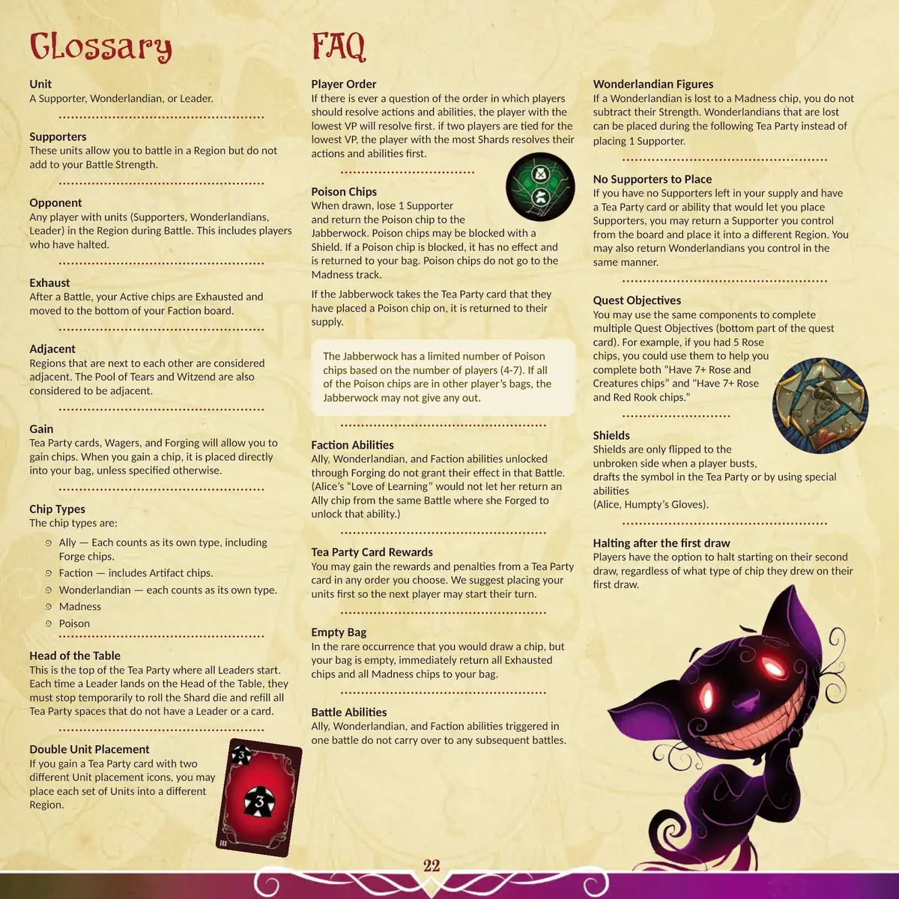
📝 第 22 页 AI 机翻对照（点击展开）
词汇表
单位
支持者、仙境居民或领袖。
支持者
这些单位允许你在区域战斗，但不增加你的战斗力。
对手
在战斗期间拥有单位（支持者、仙境居民、领袖）的任何玩家。这包括已暂停的玩家。
耗尽
战斗后，你的活跃指示物会被耗尽并移至你的派系版图底部。
相邻
彼此相邻的区域被视为相邻。泪池和维森德也被视为相邻。
获得
茶会卡牌、赌注和锻造将允许你获得指示物。当你获得一个指示物时，除非另有说明，否则它会被直接放入你的袋子中。
指示物类型
指示物类型包括：
d 盟友 — 每个都算作自己的类型，包括锻造指示物。
d 派系 — 包括神器指示物。
d 仙境居民 — 每个都算作自己的类型。
d 疯狂
d 毒药
桌首
这是茶会的顶部，所有领袖从这里开始。每当领袖到达桌首时，他们必须暂时停下来掷骰子，并填充所有没有领袖或卡牌的茶会空间。
双重单位放置
如果你获得一张有两个不同单位放置图标的茶会卡牌，你可以将每组单位放入不同的区域。
常见问题
玩家顺序
如果存在关于玩家应如何解决行动和能力的顺序问题，则VP最低的玩家先解决。如果两名玩家VP最低相同，则拥有最多碎片的玩家先解决其行动和能力。
毒药指示物
抽取时，失去1个支持者并将毒药指示物归还给贾伯沃克。毒药指示物可以用盾牌阻挡。如果毒药指示物被阻挡，它将无效并被归还到你的袋子中。毒药指示物不会进入疯狂轨道。
如果贾伯沃克拿走了他放置了毒药指示物的茶会卡牌，该指示物会被归还到他的供应中。
贾伯沃克的毒药指示物数量有限，基于玩家数量（4-7）。如果所有毒药指示物都在其他玩家的袋子中，贾伯沃克不能给出任何毒药指示物。
派系能力
通过锻造解锁的盟友、仙境居民和派系能力不会在该战斗中生效。（爱丽丝的"求知欲"不会让她在同一场战斗中归还她用来解锁该能力的盟友指示物。）
茶会卡牌奖励
你可以按任意顺序获得茶会卡牌的奖励和惩罚。我们建议你先放置你的单位，以便下一位玩家可以开始他们的回合。
空袋
在罕见情况下，如果你需要抽取一个指示物，但你的袋子是空的，立即将所有耗尽的指示物和所有疯狂指示物归还到你的袋子中。
战斗能力
盟友、仙境居民和在战斗中触发的派系能力
一场战斗不会延续到任何后续战斗中。
仙境人物（Wonderlandian Figures）
如果一个仙境人物因疯狂指示物（Madness chip）而失去，你不要减去他们的力量。失去的仙境人物可以在接下来的茶会（Tea Party）期间放置，而不是放置1个支持者（Supporter）。
没有支持者可放置
如果你的供应中已经没有支持者，并且你有一张茶会卡牌或能力可以让你放置支持者，你可以将你所控制的一个支持者从版图上返回，并将其放置到不同的区域。你也可以用同样的方式返回你所控制的仙境人物。
任务目标
你可以使用相同的组件来完成多个任务目标（任务卡片的下半部分）。例如，如果你有5个玫瑰（Rose）指示物，你可以用它们来完成"拥有7个或更多玫瑰和生物（Creatures）指示物"以及"拥有7个或更多玫瑰和红主教（Red Rook）指示物"这两个任务。
护盾（Shields）
护盾只有在玩家爆牌（busts）、在茶会中抽取符号或使用特殊能力（Alice、Humpty's Gloves）时才会翻转到未破损的一面。
在第一次摸牌后停止
玩家从第二次摸牌开始可以选择停止，无论他们第一次摸到的是什么类型的指示物。
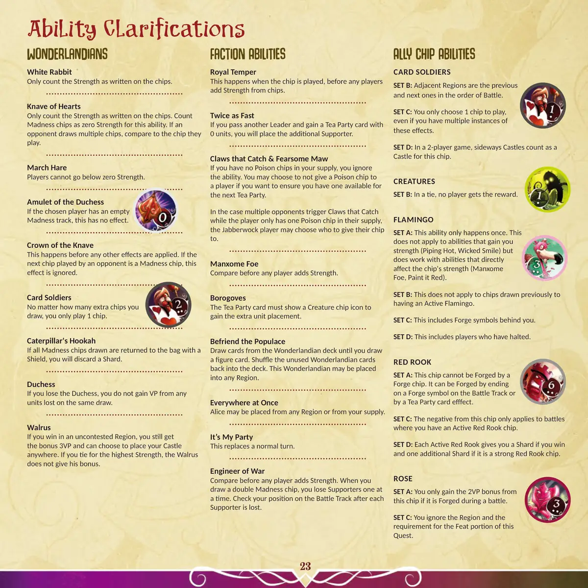
📝 第 23 页 AI 机翻对照（点击展开）
能力说明
Wonderlandians（仙境人）
White Rabbit（白兔）
仅计算筹码上写明的力量值。
Knave of Hearts（红心骑士）
仅计算筹码上写明的力量值。对于此能力，疯狂筹码计为零力量值。如果对手摸取多个筹码，与他们打出的筹码进行比较。
March Hare（三月兔）
玩家力量值不能低于零。
Amulet of the Duchess（公爵夫人护身符）
如果所选玩家的疯狂轨道为空，则此能力无效。
Crown of the Knave（骑士王冠）
此能力在任何其他效果应用前发生。如果对手打出的下一个筹码是疯狂筹码，则此能力被忽略。
Card Soldiers（纸牌士兵）
无论你额外摸取多少筹码，你只能打出1个筹码。
Caterpillar's Hookah（毛毛虫的水烟）
如果所有摸取的疯狂筹码都随护盾一起返回袋中，你将丢弃一个碎片。
Duchess（公爵夫人）
如果你失去公爵夫人，你不会从同一摸牌中失去的任何单位获得VP。
Walrus（海象）
如果你在无争议的区域获胜，你仍然获得奖励3VP，并且可以选择将你的城堡放置在任何地方。如果力量值最高平局，海象不给予其奖励。
派系能力
Royal Temper（皇室脾气）
此能力在筹码打出时发生，在任何玩家从筹码中增加力量值之前。
Twice as Fast（快两倍）
如果你超过另一个领袖并获得一个0单位的茶会卡，你将放置额外的支持者。
Claws that Catch & Fearsome Maw（捕捉之爪 & 可怕之口）
如果你的供应中没有毒药筹码，你忽略此能力。如果你想在下一个茶会确保有一个可用，你可以选择不给玩家毒药筹码。
当多个对手触发捕捉之爪，而玩家供应中只有一个毒药筹码时，捷波洛克玩家可以选择给谁筹码。
Manxome Foe（凶猛的敌人）
在任何玩家增加力量值之前进行比较。
Borogoves（博罗戈夫）
茶会卡必须显示一个生物筹码图标才能获得额外的单位放置。
Befriend the Populace（亲近民众）
从仙境牌库抽牌，直到抽到一张人物卡。将未使用的仙境牌洗回牌库。这个仙境人可以放置在任何区域。
Everywhere at Once（无处不在）
爱丽丝可以从任何区域或从你的供应中放置。
It's My Party（这是我的派对）
这取代一个正常回合。
Engineer of War（战争工程师）
在任何玩家增加力量值之前进行比较。当你摸取一对疯狂筹码时，你一次失去一个支持者。每次失去支持者后检查你在战斗轨道上的位置。
盟友筹码能力
纸牌士兵
SET B：相邻区域是战斗顺序中的前一个和后一个区域。
SET C：即使你有多个这些效果的实例，你也只选择1个筹码打出。
SET D：在2人游戏中，侧向城堡计为此筹码的一个城堡。
生物
SET B：在平局情况下，没有玩家获得奖励。
火烈鸟
SET A：此能力只发生一次。此
RED ROOK
SET A: 这个筹码不能被锻造筹码锻造。它可以通过在战斗轨道上结束于一个锻造符号，或者通过茶会卡牌效果来锻造。
SET C: 这个筹码的负面效果仅适用于你有激活的红鸦筹码的战斗。
SET D: 如果你获胜，每个激活的红鸦筹码给你一个碎片，如果它是一个强力的红鸦筹码，则额外再给一个碎片。
ROSE
SET A: 只有在战斗中锻造这个筹码时，你才能获得2VP奖励。
SET C: 你忽略这个任务的区域部分和成就部分的要求。
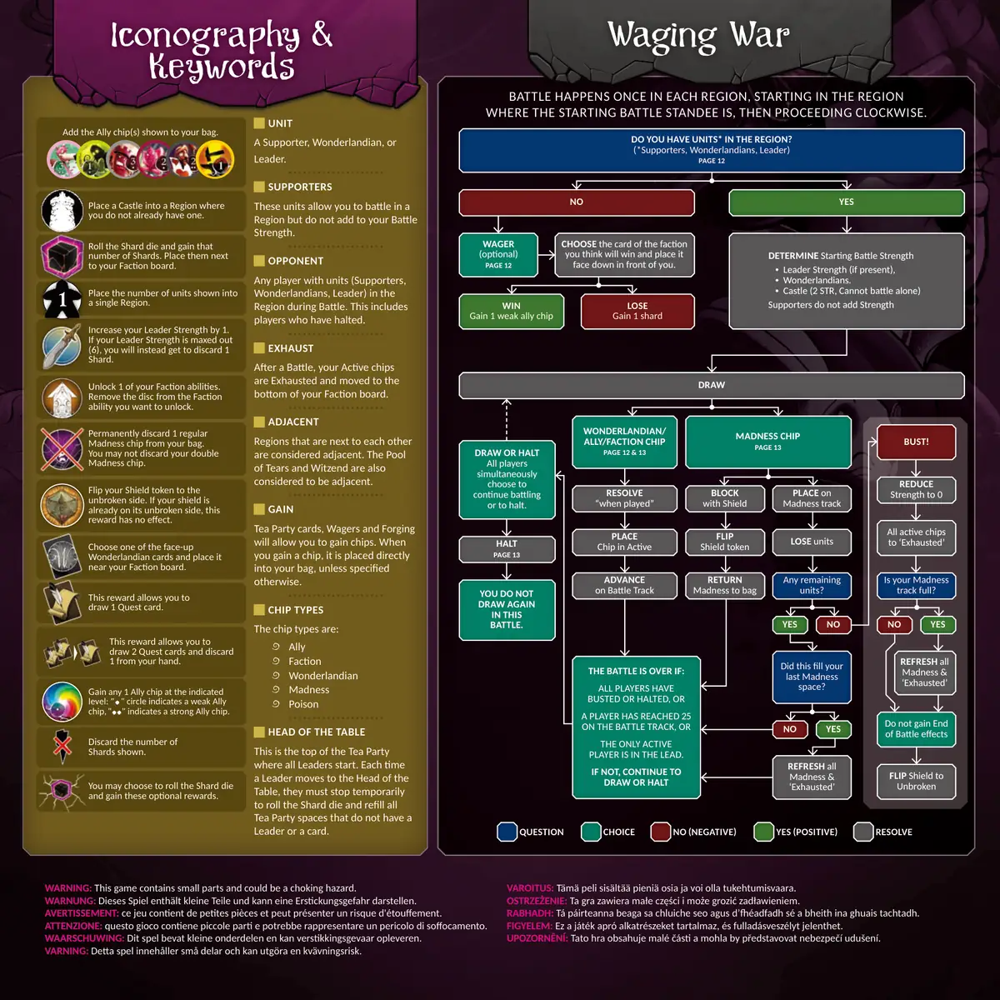
📝 第 24 页 AI 机翻对照（点击展开）
将显示的盟友指示物添加到你的袋中。
在一个你没有城堡的区域放置一个城堡。
掷碎片骰子并获得相应数量的碎片。将它们放在你的派系板旁边。
将显示数量的单位放入一个单一区域。
将你的领袖强度增加1。
如果你的领袖强度已达到最大值（6），你将可以弃置1个碎片。
解锁你的1个派系能力。
移除你想要解锁的派系能力上的圆盘。
永久性地从你的袋中弃置1个普通疯狂指示物。
你不能弃置你的双倍疯狂指示物。
将你的盾牌指示物翻到未破损的一面。如果你的盾牌已经在未破损的一面，这个奖励没有效果。
选择一张正面朝上的仙境卡牌并将其放在你的派系板附近。
这个奖励允许你抽取1张任务卡。
这个奖励允许你抽取2张任务卡并从你的手牌中弃置1张。
获得任意1个指定等级的盟友指示物："。"圆圈表示弱盟友指示物，".."表示强盟友指示物。
弃置显示数量的碎片。
你可以选择掷碎片骰子并获得这些可选奖励。
单位
一个支持者、仙境卡牌或领袖。
支持者
这些单位允许你在区域中战斗，但不增加你的战斗强度。
对手
在战斗期间有单位（支持者、仙境卡牌、领袖）在区域中的任何玩家。这包括已经暂停的玩家。
疲劳
战斗后，你的活跃指示物会被疲劳并移到你的派系板底部。
相邻
彼此相邻的区域被认为是相邻的。泪之池和维森德也被认为是相邻的。
获得
茶会卡牌、赌注和锻造将允许你获得指示物。当你获得一个指示物时，它被直接放入你的袋中，除非另有说明。
指示物类型
指示物类型有：
d 盟友
d 派系
d 仙境
d 疯狂
d 毒药
桌首
这是茶会的顶部，所有领袖从这里开始。每次领袖移动到桌首时，他们必须暂时停下来掷碎片骰子并填充所有没有领袖或卡牌的茶会空间。
图标与关键词
发动战争
战斗在每个区域进行一次，从起始战斗立像所在的区域开始，然后顺时针进行。
警告：本游戏含有小零件，可能造成窒息危险。
警告：本游戏含有小零件，可能造成窒息危险。
警告：本游戏含有小零件，可能造成窒息危险。
警告：本游戏含有小零件，可能造成窒息危险。
警告：本游戏含有小零件，可能造成窒息危险。
警告：此游戏包含小零件，可能造成窒息危险。
警告：此游戏包含小零件，可能造成窒息危险。
警告：此游戏包含小零件，可能造成窒息危险。
警告：此游戏包含小零件，可能造成窒息危险。
注意：此游戏包含小零件，可能造成窒息危险。
警告：此游戏包含小零件，可能造成窒息危险。
你在地区中有单位吗？
(*支持者、仙境人、领袖)
第12页
否
竞标
(可选)
第12页
选择你认为会获胜的派系卡牌，并将其面朝下放在你面前。
获胜
获得1个弱小盟友指示物
仙境人/
盟友/派系指示物
第12页 & 第13页
如果满足以下条件，战斗结束：
所有玩家都已
破产或停止，或者
有玩家已在战斗轨道上
达到25分，或者
唯一活跃的玩家处于领先地位。
如果不是，继续
摸牌或停止
疯狂指示物
第13页
破产！
摸牌或停止
所有玩家
同时
选择继续
战斗或停止。
停止
第13页
你不会
在本次
战斗中再次
摸牌。
放置于
疯狂轨道上
失去单位
减少
力量值至0
所有活跃指示物
至"疲惫"
你的疯狂
轨道已满吗？
不获得战斗结束
效果
翻转护盾至"未破损"
刷新所有疯狂&
"疲惫"指示物
还有剩余单位吗？
这填满了你的
最后一个疯狂格吗？
刷新所有疯狂&
"疲惫"指示物
是
是
是
否
否
否
用护盾
阻挡
翻转
护盾指示物
将疯狂
放回袋中
解析
"打出时"效果
将指示物
放置于活跃区
在战斗轨道上
前进
失去
获得1个碎片
是
摸牌
确定初始战斗力量
• 领袖力量值（如果存在），
• 仙境人。
• 城堡（2力量值，不能单独战斗）
支持者不增加力量值